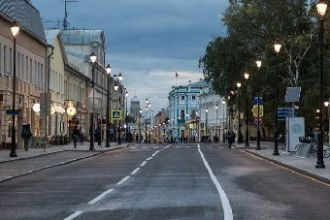
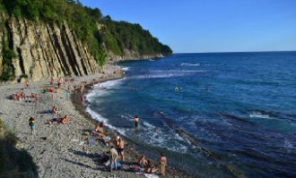
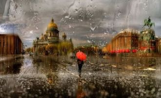

Москва — российская столица,Родной истории земля,Стоит высоток вереницаОт Подмосковья до Кремля.

Средь предгорий Кавказа Большого,У прекрасных морских берегов,Есть видение рая земного,Это город, как будто из снов.
Где плещутся волны устало, Трава утопает в росе,Где ветер гуляет по скалам,Есть город морской — Туапсе.
Я сегодня в селе Чуть-чуть на веселе Громко песню пою Про богиню свою
Эрвэлзэнхэн дэрвэлзэнхэн зүүдлээд байна дааЭрдэнсийн өлгий нутаг миньСанагалзанхан санагалзанхан бодогдоод байна даа
Аргалын удамт хонин сүрэг маань Алагланхан сувдранхан өсөж байнаХалзан цагаанхан хурганууд нь хө Хашаа дүүрэн тоглонхон байнаДх:
Ты понять меня всё пытаешьсяИ найти во мне что-то главноеА когда опять ошибаешьсяГоворишь что я очень странная.
Дождик случайный, ночь синеокаЯ так печальна и одинокаСправа и слева - скучное местоЯ королева без королевстваСправа и слева - скучное место
Руководитель наш, Вы «классный» во всех смыслах!Осенний праздник – День учителя настал!И на уроках только радостные мысли,
Певучий голос раздаётся.Зал аплодирует. Стихает. Вокал от сердца – в сердце льётся.На сцене выступает Тая.Всегда поёт без фонограммы!

Когда слова лишь россыпь скучных литер, Нет сил, и выход к музе не найден,Достаточно одной поездки в Питер – Для вдохновенья людям он рожден!
孙：梦中人 熟悉的脸孔孙：你是我守侯的温柔孙：就算泪水淹没天地 我不会放手孙：每一刻 孤独的承受孙:只因我曾许下承诺合:你我之间熟悉的感动 爱就要苏醒韩:问世苍生惟有爱是永远的神话韩:潮起潮落始终不会尘埃的相约
Global DeejaysParisLondonL.AChicagoTokyoBagdadNew YorkHear the Global Deeyas
I knew you before 'bout five years agoThen you seemed to be like a personWho didn't act like the people I knowYes, something was special about you
Still is the water where my fears are boundWatching me fall like a leafThat was so brutalSuch a simple decisionWhen will I be released
Faz faz faz faz comigoEu quero estar contigoPerdidos de amor ai ai aiFaz faz faz faz comigoPara ser o meu castigo
If you ain't got no money take your broke ass homeYou say: If you ain't got no money take your broke ass homeG-L-A-M-O-R-O-U-S, yeah G-L-A-M-O-R-O-U-S
Припев:Ты далеко, где-то там, за привычным "Нельзя".Ты далеко, где-то там, за простым "Извини".Ты далеко, где-то там, за коротким "Пойми".
From Jamaica to the world It's just love, It's just love,
Mira lo que se avecinaa la vuelta de la esquina,viene Diego rumbeando.Con la luna en las pupilasy en su traje agua marina